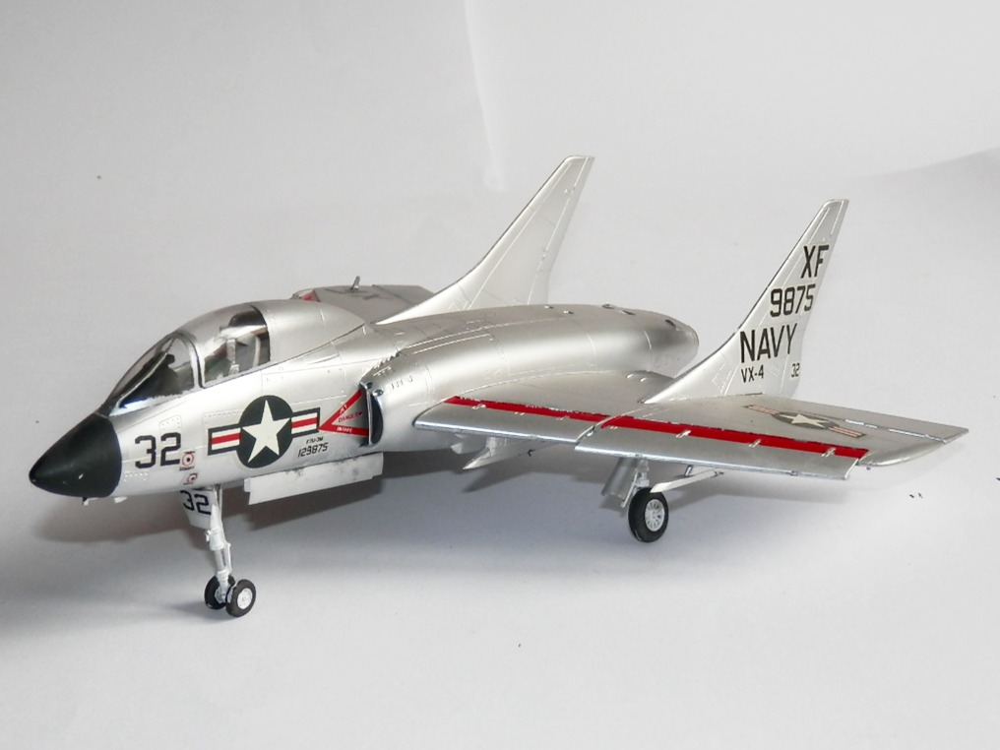
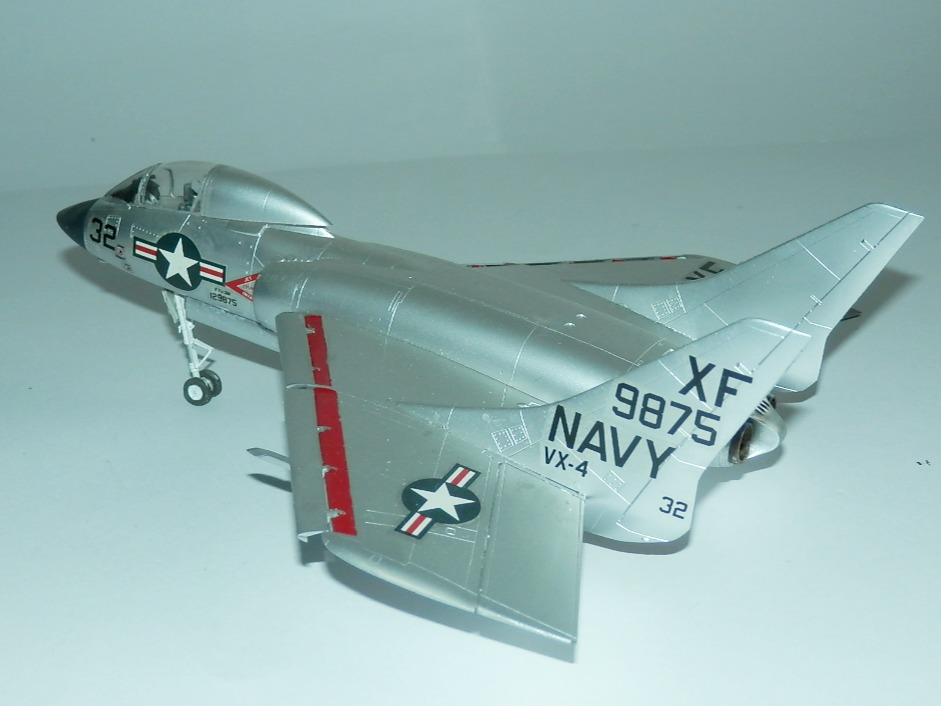

Aerei · scale model archive
Vought F7U-3M Cutlass
Vought F7U-3M Cutlass — Kit: Fujimi, Scale: 1/72. Loosely based on late war german fighter designs, it was difficult to fly and not a great success

Photo gallery

English description
Loosely based on late war german fighter designs, it was difficult to fly and not a great success
Descrizione italiana
Liberamente ispirato ai progetti tedeschi di caccia di fine guerra, era difficile da pilotare e non ebbe grande successo.